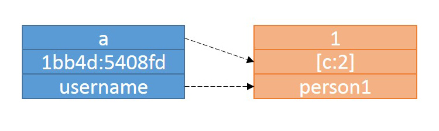

No-Nonsense NoSQL
@jennstrater | Senior Consultant | Object Partners
Assumed Knowledge
- Relational Databases
- Grails
- JSON
Overview
- Definition
- Types
- Integration with Grails
What is NoSQL?
- Not Only SQL
- Group of data storage solutions that are not Relational Database Management System(RDBMS)
- Schemaless
- Non-relational
Types of NoSQL solutions
- Key-value
- Document
- Column
- Graph
Key-value Stores
Examples
 MemCached
MemCached DynamoDB
DynamoDB Redis*
Redis*
Uses
- Content Caching
- Transient Data
- Session Data
- Image Stores
Weaknesses
- No relationships
- No transactions
- Querying
Document Stores

Examples
 CouchDB
CouchDB RavenDB
RavenDB Azure DocumentDB
Azure DocumentDB MongoDB
MongoDB
Uses
- Content Management Systems(CMS) / Blogging Platforms
- Forms/data with many optional fields
- Frequently Changing Schemas
Weaknesses
- Complex transactions
- Complex searching
Column Databases

Examples
 Cassandra
Cassandra HBase
HBase Hypertable
Hypertable
Use Cases
- CMS Systems/ Blogging Platforms
- Log Aggregators
- Incremental Counters
Weaknesses
- Schema Changes
- Arbitrary unstructured data
Graph Databases

Examples
 Neo4J
Neo4J OrientDB
OrientDB Allegro Graph
Allegro Graph
Uses
- Many connections between data
- Social Networks
- E-commerce Recommendations
- Nearby Locations and Routing
Weaknesses
- Casscading writes
- Very different way of thinking about data
Suggested Reading
- Sadalage, Pramod J., and Martin Fowler.
NoSQL Distilled: A Brief Guide to the Emerging World of Polyglot Persistence . Addison-Wesley Professional, 2012. Print. - Vardanyan, Mikayel. "Picking the Right NoSQL Database Tool."
Monitis Blog . 22 May 2011. Web. - Copeland, Rick.
MongoDB Applied Design Patterns . O'Reilly Media, 2013. Print. - Chinnachamy, Arun.
Redis Applied Design Patterns . Packt Publishing, 2014. Print.
How do I pick just one?
You don't have to!
Example Task
- Gr8Ladies Promotional Items Shopping App
- Catalog Products
- Shopping Cart
- Save Orders*
- Recommendations*
Proposed Solution
- Catalog Products -
MongoDB - Shopping Cart -
Redis - Save Orders* -
MySQL - Recommendations* -
Neo4j